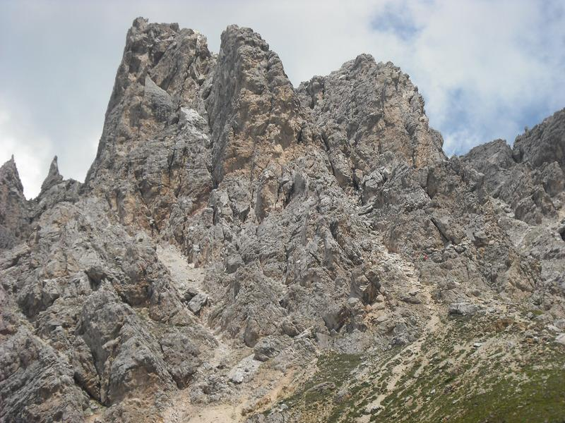
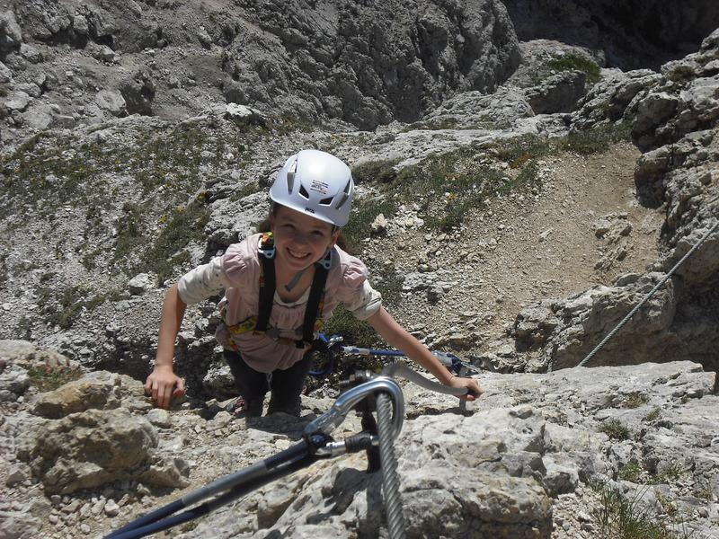

Cir V Via Ferrata
This summer we went on a family holiday to Val Gardena, in the Italian Dolomites. This was our first visit to the Dolomites I was keen to climb a Via Ferrata. Two of of the children wanted to come with me, so I wanted to choose a route that was hard enough to be interesting, easily accessible and not too long.
Cir V. Aproximate line of route marked
{kind=link}
We were staying in Selva and after extensive research (OK, so I noticed the route from the cable car station), we decided on the Cir V. The start of the route was only about half an hour's walk from the Dantercepies telepherique. According to the Cicerone Guide the route was grade 2 and the descent was straightforward. You can see more photographs of the route here
I had brought a rope, harnesses and a minimal climbing rack, but we had no Via Ferrata gear. A trip round the gear shops in Selva soon had us kitted out. On the morning of the climb John was too tired to come with us, so Ella and I set off on our own. To get to the foot of the climb involves a short walk from the telepherique station, followed by a plod up the gully. At the top of the gully a short iron ladder marks the start of the route.
Ella on Cir V Via Ferrata
{kind=link}
I wasn't sure what to expect, so had brought along a 50 metre rope. However, we didn't need to use it and it stayed in the bottom of the sack for the whole route. From the top of the ladder I stepped right onto the face and climbed up this to a good ledge at the foot of a steep wall. Ella soon joined me, managing both the climbing and the clipping into the wire with ease.
There were a couple of Germans behind us and I offered to let them climb past us. Once the two Germans had climbed past us, we started up the steep wall above. The anchor points on the wall were well placed, set closer together on sections that were more difficult. Above the steep wall there was a leftwards traverse into a chimney. This lead upwards to the shoulder below the final summit bock. There was a short walk/scramble along the ridge to reach the summit block. A short steep climb lead up the small summit, where I clipped Ella onto the cross, as there were large drops all around us. The two Germans, who had arrived at the summit a few minutes before us, greeted us with a "Berg Heil" and a handshake. They both congratulated Ella on how well she had climbed the route.
We stayed on the summit for about 20 minutes admiring the views and taking photos.
Down climbing from the summit block, we descended into a gully. The top part of the descent was protected by a cable, although it wasn't really difficult. However, there were a lot of loose blocks and I wouldn't have liked to have been descending with a lot of other people above me. About forty minutes later we were back at the telepherique station, where the others had come up to meet us.
We had both enjoyed the route so much, that we came back the next morning with John and did it again. This time we made a very early start, arriving at the base of the route before the first chair lift from Corvara had arrived, so we had the whole route to ourselves.
I really enjoyed the climbing and it's a good route for children, since it's short and wouldn't be too difficult to retreat from in the event of bad weather. My only reservation would be the danger of stone fall on the descent if the route was really crowded.